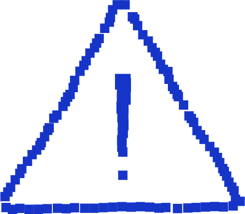

이 웹사이트는 데스크탑에 최적화되어 있습니다.모바일 환경에서는 다양한 기능이 작동하지 않거나 보이지 않을 수 있습니다.
CostaRicaExoskeletonLabs
Quasicrystal
001
AN ENCOUNTER 이름모를 흔적과의 첫 만남
2026
QUESTIONS 낯선 모습으로 돌아온 신체의 잔여물
2027
DISAPPEAR 사라진 콰지
2028
A GUIDE BOOK 디지털 여행자를 위한 안내서
2036
NEWS 최신기사
2037